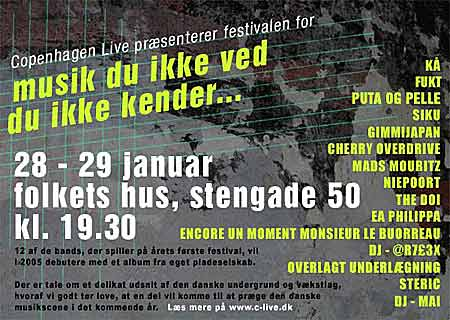

| dunst recommends this event | 28.+29. Januar 2005 |
 |
|
| Puta fra dunst skal synge. 12 af de bands, der spiller på årets første festival, vil i 2005 debutere med et album fra eget pladeselskab. Der er tale om et delikat udsnit af den danske undergrund og vækstlag, hvoraf vi godt tør love, at en del vil komme til at prøge den danske musikscene i det kommende år. Læs mere på www.c-live.dk |
|
| Tilbage |